Programming, electronics, lifestyle
Я давно хотел собрать датчик анализа воздуха, а к конкретной реализации меня подтолкнула статья на blakadder.com.
Сам датчик IKEA VINDRIKTNING представляет из себя небольшое устройство в белом корпусе с разъёмом USB-C. Данное устройство измеряет количество пыли размером 2.5 микрометра или PM2.5 (подробнее об этом здесь).
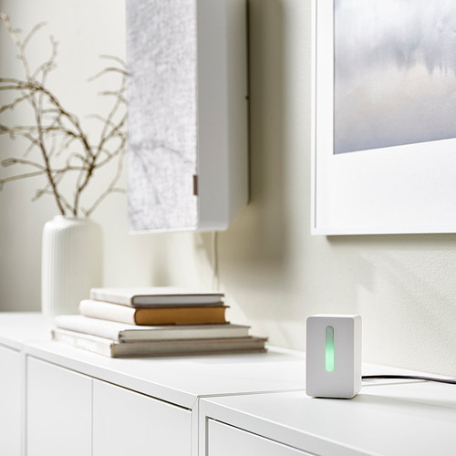
Помимо световой индикации устройство может подключаться к очистителю воздуха IKEA FÖRNUFTIG.
Устройство выполнено на микроконтроллере ES7P001FGSA:
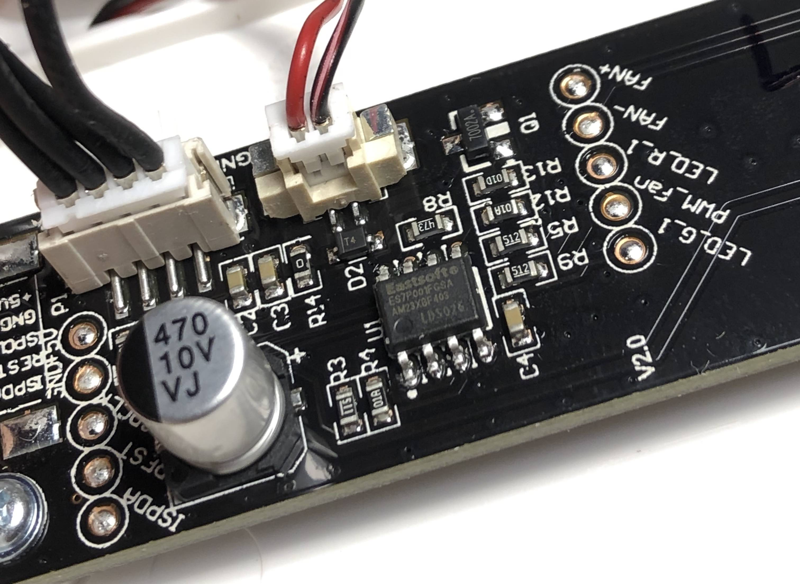
Прибор внутри состоит из платы и самого датчика в массивном железном корпусе:
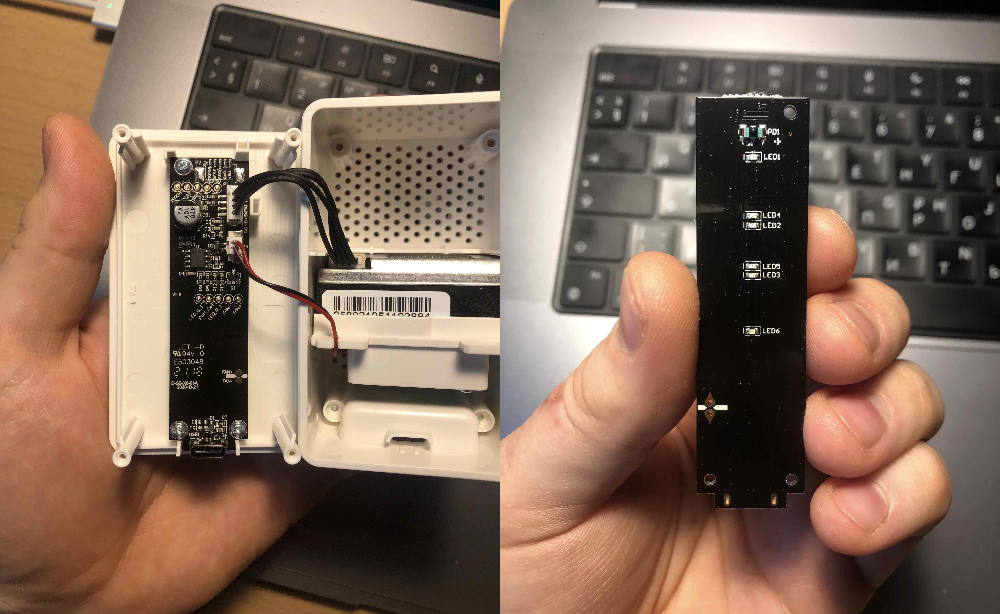
Как видно в верхней части много места, чтобы поместить туда дополнительную электронику.
Для перепрошивки я буду использовать USB-UART преобразователь. Изначально я собрал setup на плате для Serial Wifi линка:
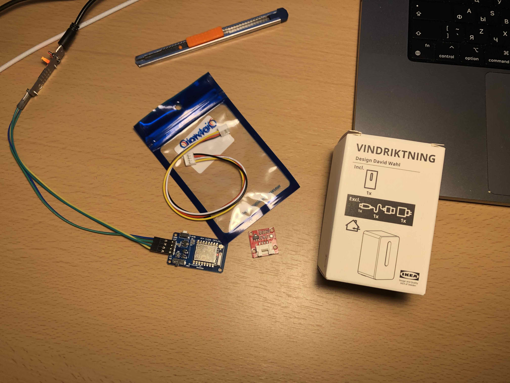
Данная плата хороша тем, что необходимые пины соединены сразу, а также есть кнопка сброса и режима программирования. Однако плата, занимает достаточна массивна и я решил использовать плату ESP-12F.
Давайте рассмотрим как нужно подключить плату для её работы и перепрошивки.
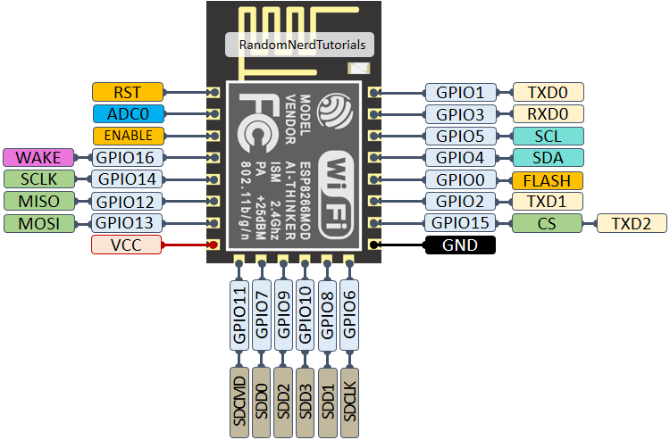
Для работы модуля необходимо:
ENABLE притянуть к плюсу, во многих мануалах это делается через резистор. Я не совсем понимаю зачем, тк состояние самого пина вряд ли будет меняться со стороны контроллера, разве чтобы ограничить ток, хотя если проблема будет в неправильном напряжении, плата все равно сгорит по питанию.RESET крайне странно, но во многих мануалах данный вывод также притягивают к плюсу, во избежание сброса платы. Хотя на мой взгляд разработчики должны были сделать внутреннюю подтяжку данного пина. Однако я сделал подтяжку и этого пина, тк не хочу углубляться в реализацию самой платы и разбираться в этом. Резистор точно не повредит.GPIO15 нужно притянуть к земле, это можно сделать накоротко, если не планируется использование пина в дальнейшем, а можно через подтягивающий резистор, я сделал через резистор, чтобы в дальнейшем можно было использовать пин. Как по мне тоже, странное решение, можно было и сделать внутренний резистор подтяжки.GPIO0 при загрузке, нужно притянуть к земле для перепрошивки модуля.Для притяжки каких либо пинов я использую резисторы номиналом 10кОм.
Вариант схемы для перепрошивки:
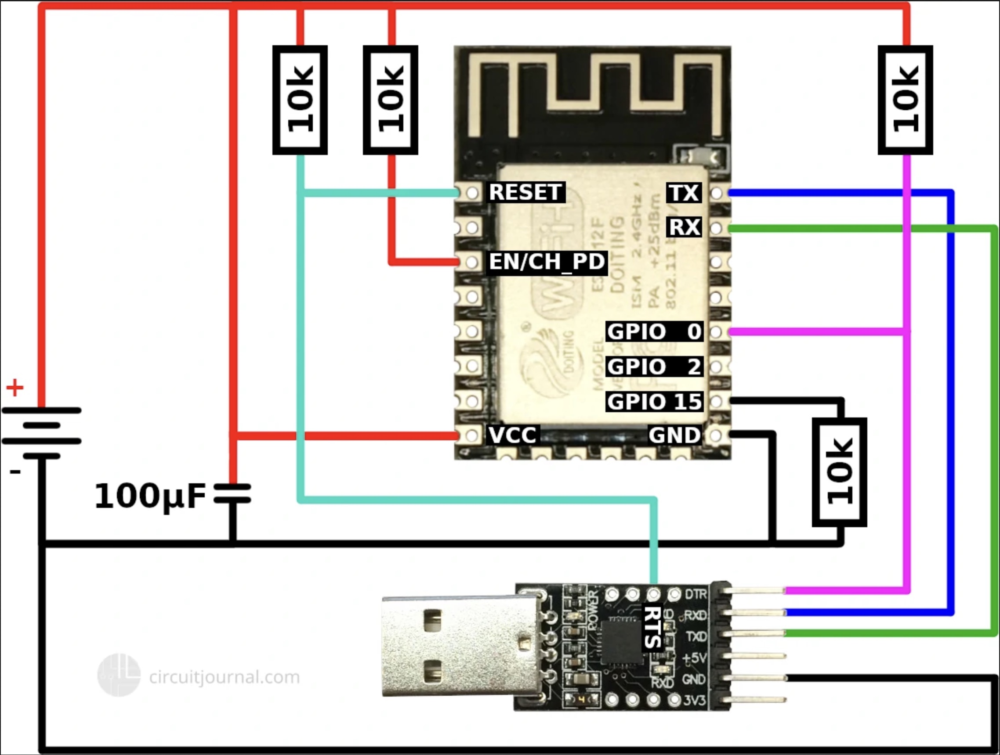
Подробнее о пинах ESP8266 на randomnerdtutorials.com, ниже краткая выжимка:
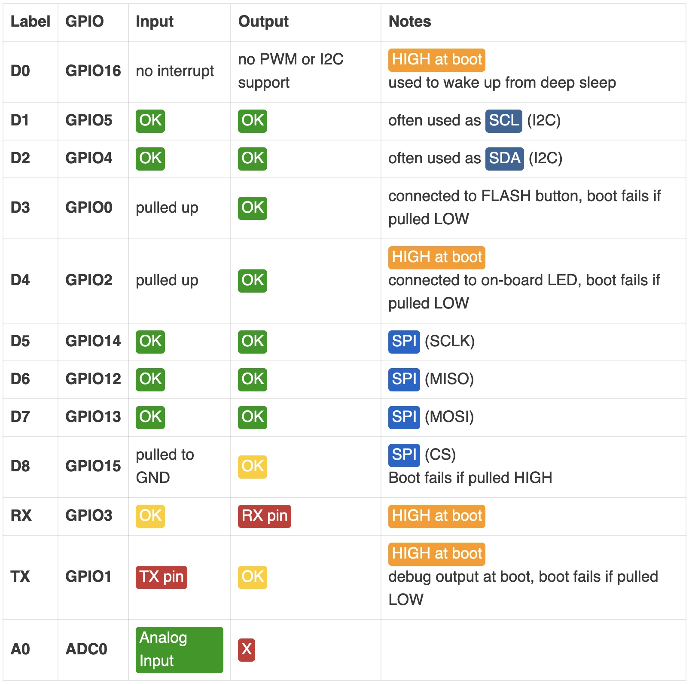
Мой будерброд из датчиков и контроллера выглядит следующим образом:
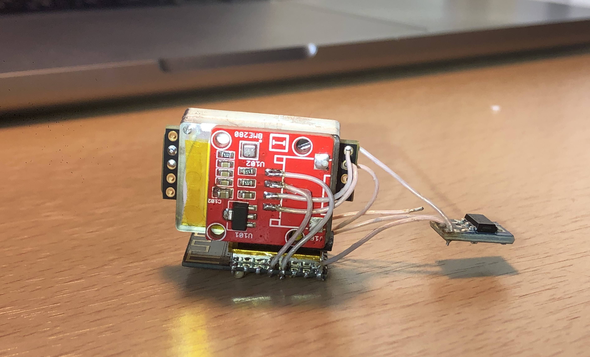
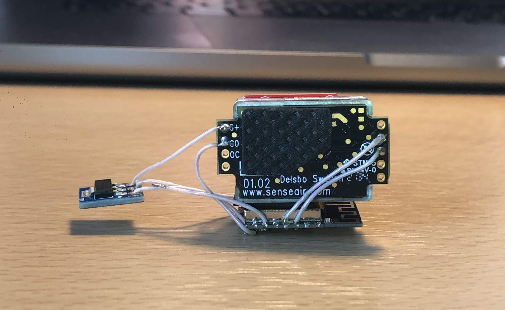
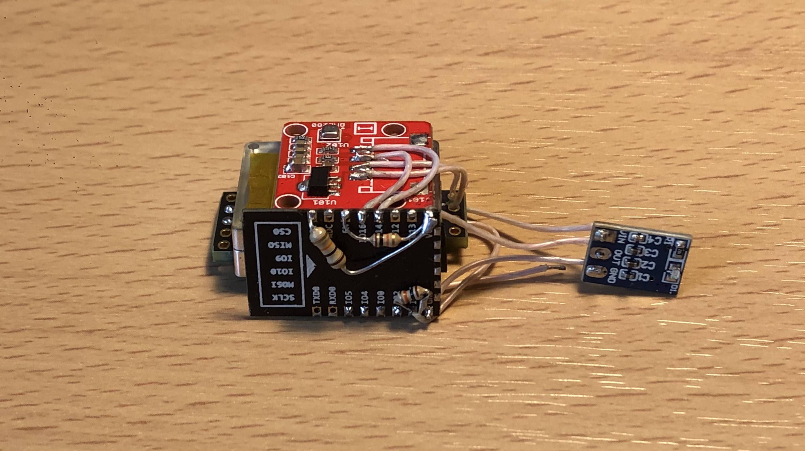
Приводить схему подключение не вижу особого смысла, разве что перечислю используемые датчики и итогово, пины к которым я их подключил:
IKEA VINDRIKTNING (UART интерфейс, TX линия) – GPIO2BME280 (I2C интерфейс) – GPIO12 и GPIO13 (где SDA, где SCL особо роли не играет, тк задается программно)SenseAir S8 (UART интерфейс) – GPIO4 и GPIO5 (где RX, где TX особо роли не играет, тк задается программно).
- Отдельная платка это линейный преобразователь на 3.3 вольта (aliexpress).
- Подробнее про датчик
SenseAir S8(aliexpress) в статье emariete.com.
Позже оказалось, что для I2C нельзя использовать GPIO16 и я перепаял подключение датчика BME280.
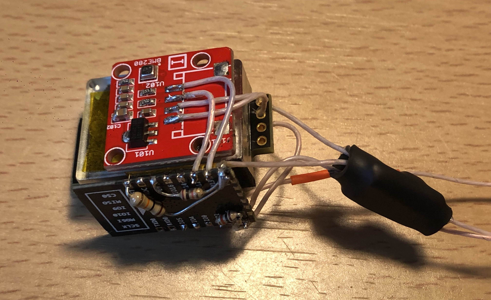
После подсоединения к плате VINDRIKTNING:
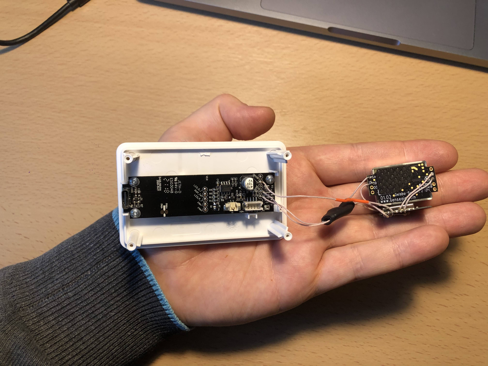
Тут особо нечего писать, я взял также как и автор исходной статьи замечательную модульную прошивку для ESP8266 – Tasmota.
Я собирал устаревшую версию (репа, коммит 964f0bd62d9a490e5d8141c68e27418620015dfe), тк тестировал это все еще в начале, года и не стал пересобирать все на новой.
Далее я просто отключил неиспользуемые и включил используемые модули в файле tasmota/my_user_config.h. Мой коммит в виде patch файла.
После успешной перепрошивки, ESP8266 раздает незащищенную точку доступа. И веб-сервер позволяющий настроить устройство. Первое, что нужно сделать - назначить работу выходов контроллера во вкладке Configuration.
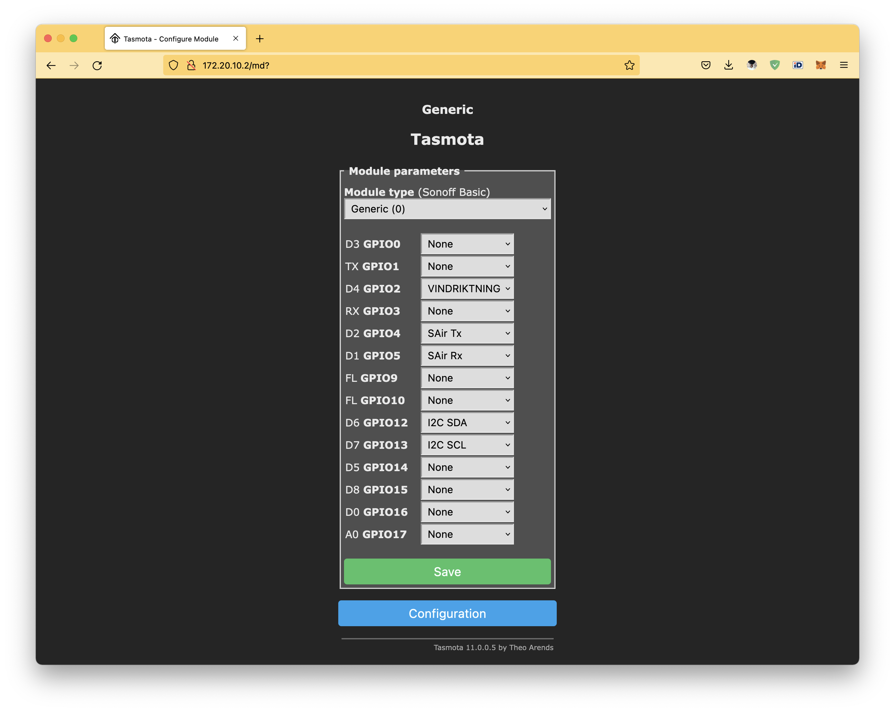
После чего, если все прошло успешно, на главной странице отображаются значения с датчиков.
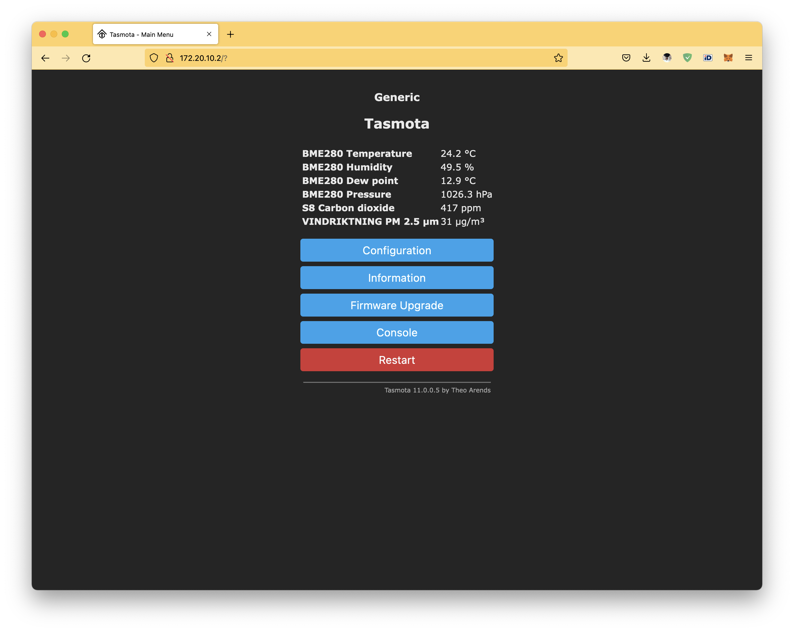
Также во вкладке MQTT можно настроить отправку значений с датчиков в MQTT брокер. Однако на сколько я понял, это работает только без SSL.